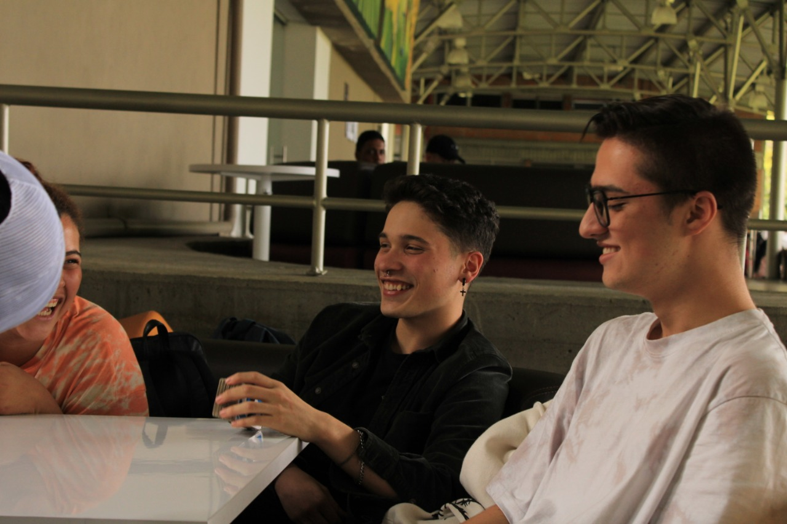

Acerca de mi
Hola, mi nombre es Simón Miranda Rendón tengo 18 años y este es mi blog de primer semestre, soy un estudiante de ingenieria de sistemas de la Universidad de Medellin.

Me encantan los videojuegos, salir a divertirme con mis amigos, escuchar musica y de vez en cuando ir a bailar.
Me encanta la progrmacion, la primera vez que escuche acerca de ella fue en el colegio. Desde el momento en que empece a programar quede facinado y decidi dedicarme a ello, hoy en dia aspiro a aprender cosas nuevas ahora que estoy en la universidad. Por ejemplo, nuevos lenguajes de programacios, marcos de trabajo, sisitemas operativos, bases de datos y el diseño web. En algun punto de mi carrera me gustaria especializarme en ciberseguriadad pero aún no lo tengo muy claro, por ahora solo me concentrare en obtener todo tipo de conocimientos nuevos y conocer nuevas amigos que en conjunto podamos aportar a nuestros intereses con el proposito de cumplir metas.
Me encanta la idea de conocer nuevas personas y crecer junto a ellas, espero drifutar de lo que me queda de mi carreara con toda la actitud:D